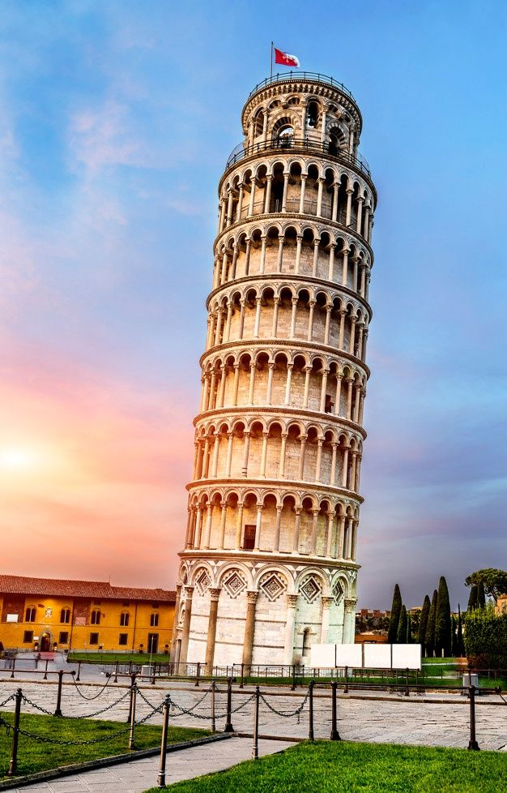

paragrafo qualquer
paragrafo qualquer
A Torre de Pisa (em italiano, Torre Pendente di Pisa) é um monumento histórico que está localizado na cidade de Pisa, Itália. A construção foi declarada Patrimônio Mundial pela Unesco, em 1987. A Torre de Pisa é muito famosa pelo fato de estar levemente inclinada.
oi meu mano